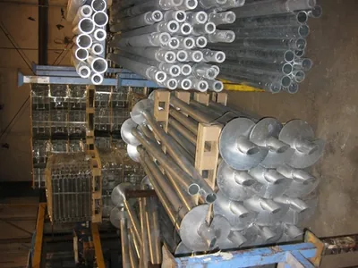
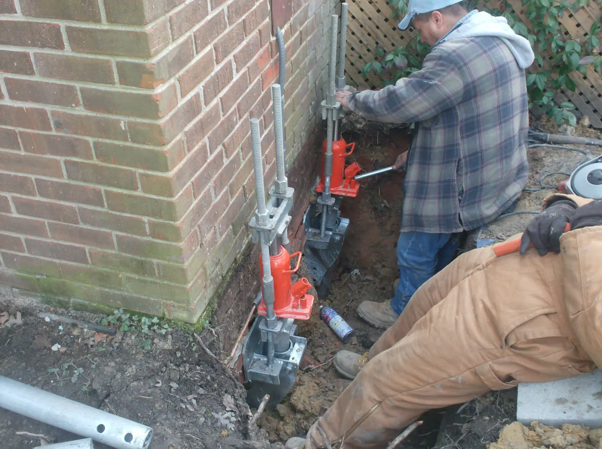
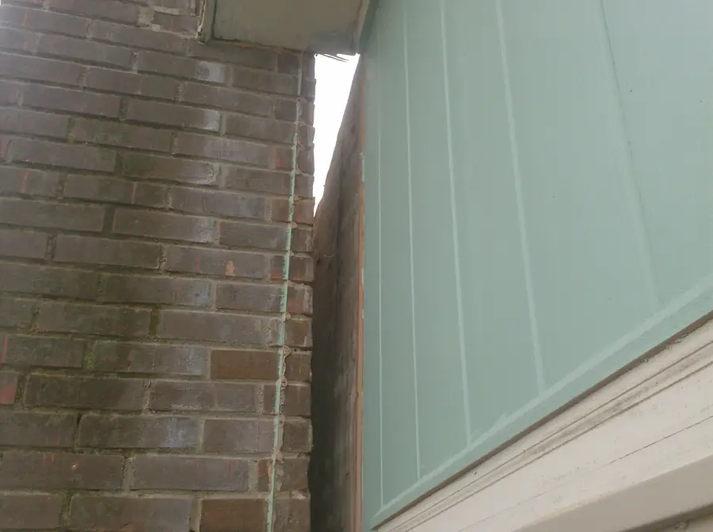
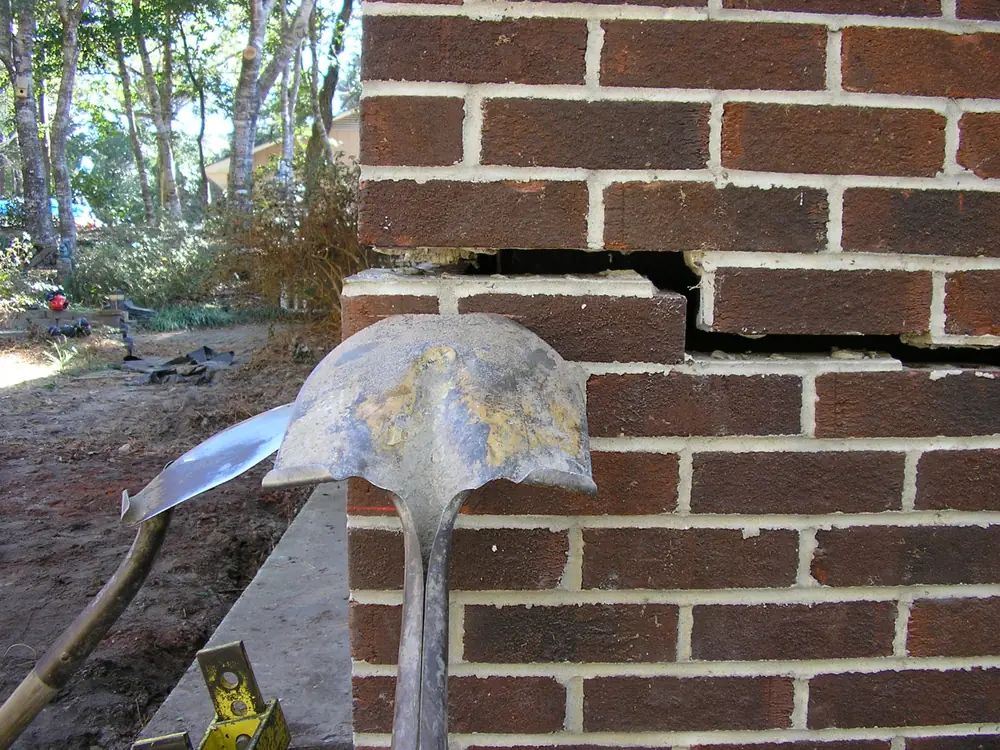
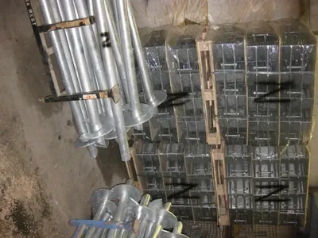

S‑101
Helical piers
Steel shafts with helix plates screwed down to load bearing soil, then bracketed to the footing. Used for repairs and for new construction.

Repairs
Hydraulically driven and helical pier systems for everything from a sinking chimney to a whole house, plus the crawl space work that keeps it from happening again.
Steel shafts with helix plates screwed down to load bearing soil, then bracketed to the footing. Used for repairs and for new construction.

Hydraulically driven steel piers pressed down under the weight of the house until they reach firm soil, then used to lift.

Chimneys are the heaviest part of a house per square foot, so they settle first. The fix is support under the footing, not straps to the wall.

Rotted joists, caps, studs and subfloor replaced, plus grading, drainage and ventilation changes so it does not come back.
Placeholder job photo
Bowed foundation and retaining walls pushed back toward plumb and reinforced.

Sunken slabs raised and supported from below.
Placeholder job photo
Helical pier foundations for new buildings: no concrete curing, no vibration, loaded the same day.

From the Residential Foundation Repair page on their current site.
Their current site says to ask about a transferable life of structure warranty on foundation repairs.
Placeholder warranty terms, confirmed by Carolina Foundation Repairs.